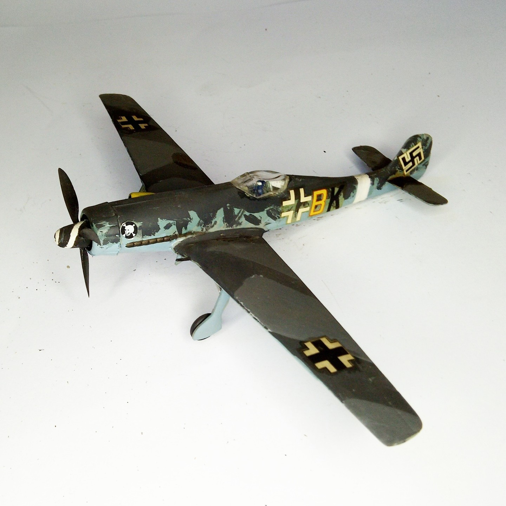

Aerei · scale model archive
Focke Wulf Ta152H
Focke Wulf Ta152H — Kit: Frog, Scale: 1/72. This was one of the first kits to represent some of the rare birds of the Second ,World War, apologies for…

Photo gallery
English description
This was one of the first kits to represent some of the rare birds of the Second ,World War, apologies for the crude mottled effects and oversize swastika
#1/72 #Frog
Descrizione italiana
Questo fu uno dei primi kits una represent some del raro birds del Second ,World War, apologies per il crude mottled effects e oversize wastika.